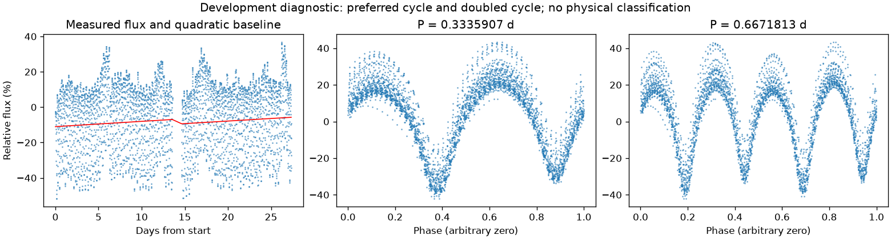
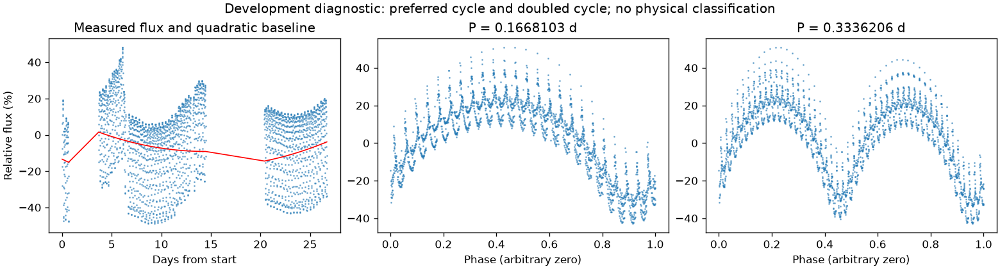

亮度重复，周期尚有歧义
亮度重复周期约 0.33361860 天。多组周期候选尚未排清，未选择最终周期；这不证明存在多种独立物理变化。
第三版周期：0.33359065199402155 天；状态：preferred_lightcurve_cycle。

左图红线是缓慢基线；右面两图去除该基线。若未通过周期要求，两图只展示得分最高的竞争解释。
| 竞争周期（天） | 预测方法与改善 | 各组改善 | 通过初筛 |
|---|---|---|---|
| 0.3335907 | 交替循环：91.3% | 90.7% / 91.9% | 是 |
| 0.1667881 | 交替循环：84.7% | 85.3% / 84.0% | 是 |
| 0.0842080 | 交替循环：46.5% | 43.3% / 49.6% | 是 |
| 0.3349119 | 交替循环：19.4% | 19.5% / 19.3% | 否 |
| 0.1683652 | 交替循环：1.2% | 0.8% / 1.6% | 否 |
| 0.0833931 | 交替循环：-222.8% | -200.5% / -238.8% | 否 |
“预测改善”衡量用一组周期的形状预测另一组，比只有缓慢基线好多少；负数表示更差。搜索和预测共用了资料，因此这不是可信概率，也不是独立验证。
辅助数据检查：背景 SAP_BKG、指向修正 POS_CORR、亮斑中心 MOM_CENTR，或明确提供的仪器通道。
相关性只提示需要检查来源。恒星自身变暗也可能导致亮斑中心移动，不能据此断定是仪器。
第三版周期：0.16681030576746253 天；状态：preferred_lightcurve_cycle。

左图红线是缓慢基线；右面两图去除该基线。若未通过周期要求，两图只展示得分最高的竞争解释。
| 竞争周期（天） | 预测方法与改善 | 各组改善 | 通过初筛 |
|---|---|---|---|
| 0.1668103 | 交替循环：89.8% | 88.4% / 91.1% | 是 |
| 0.3336466 | 交替循环：89.7% | 89.2% / 90.2% | 是 |
| 0.1651538 | 交替循环：18.1% | 17.7% / 18.4% | 否 |
| 0.3304094 | 交替循环：15.8% | 16.1% / 15.4% | 否 |
| 0.1684947 | 交替循环：10.2% | 9.6% / 10.9% | 否 |
| 0.0824776 | 交替循环：1.4% | 4.8% / -1.7% | 否 |
| 0.0841945 | 交替循环：-12.3% | -13.4% / -10.9% | 否 |
| 0.3369402 | 交替循环：-52.3% | -53.0% / -51.5% | 否 |
“预测改善”衡量用一组周期的形状预测另一组，比只有缓慢基线好多少；负数表示更差。搜索和预测共用了资料，因此这不是可信概率，也不是独立验证。
辅助数据检查：背景 SAP_BKG、指向修正 POS_CORR、亮斑中心 MOM_CENTR，或明确提供的仪器通道。
相关性只提示需要检查来源。恒星自身变暗也可能导致亮斑中心移动，不能据此断定是仪器。